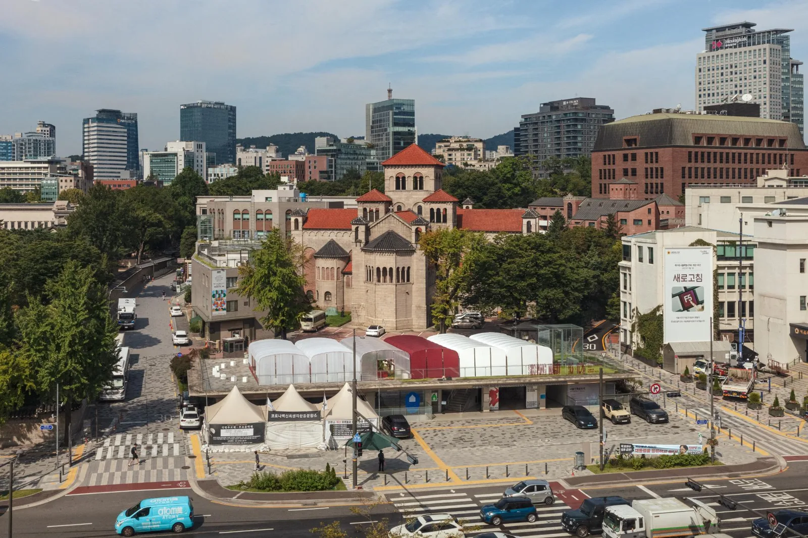
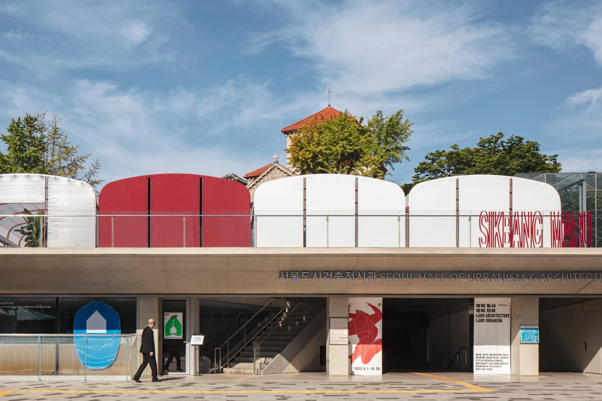
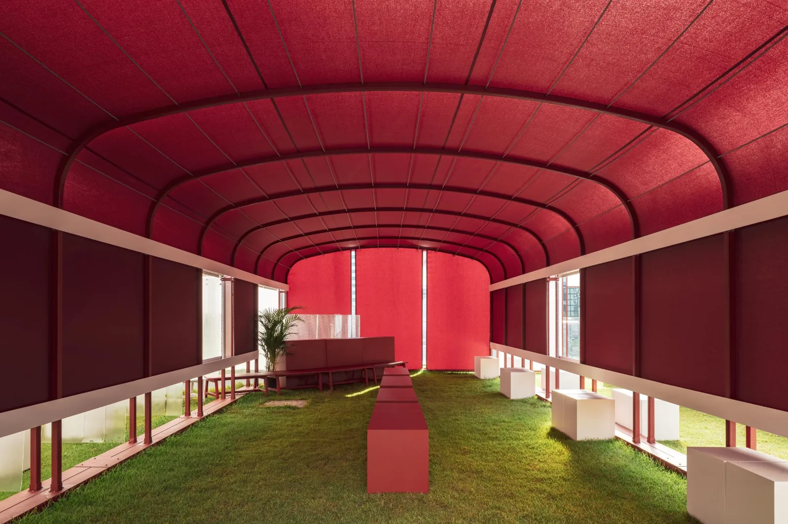
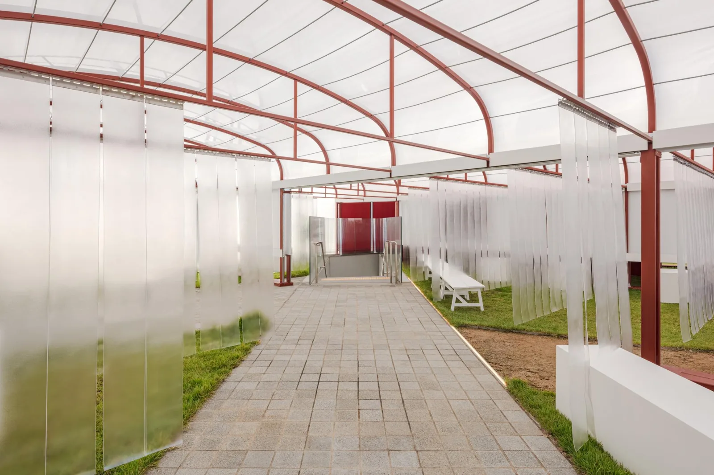
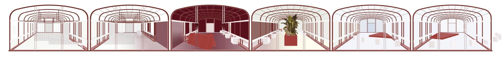
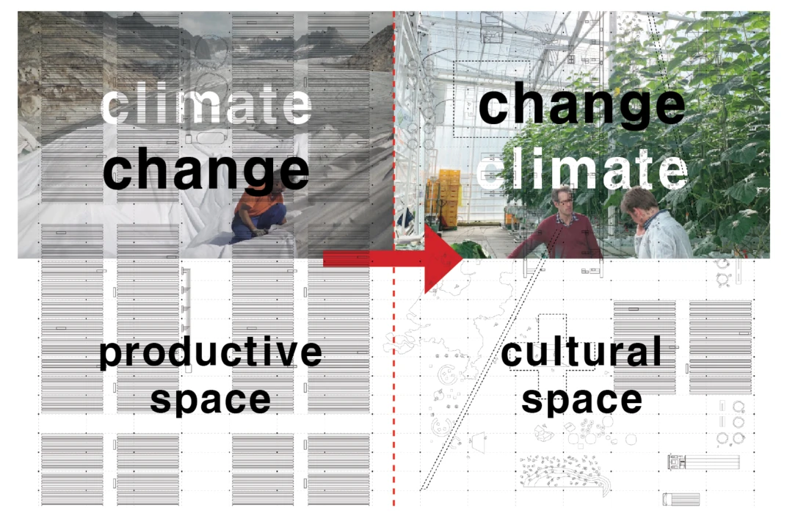
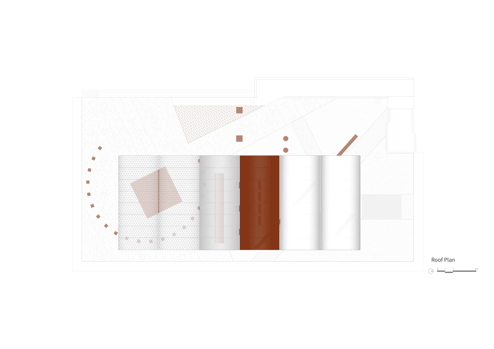

Public pavilion · 2023
Sikbang Maru
one-aftr
Seoul, South Korea
A hall with a small stage supports informal performance and gathering, while a burgundy meditation room provides retreat. A planted bay and translucent lobby offer other ways to pause within the city.
Six adjoining greenhouse bays receive four different fabric coverings. White shade mesh, translucent film, blackout tarp and insulating fabric alter light, airflow and privacy within the same structural system, showing how an economical repeated frame can support markedly different atmospheres.


Relevant connections
THINK
An enclosed meditation room offers a calm setting away from the busy street.
SHOW
The open hall and stage support public gathering and informal performance.
Images and drawings / 07











